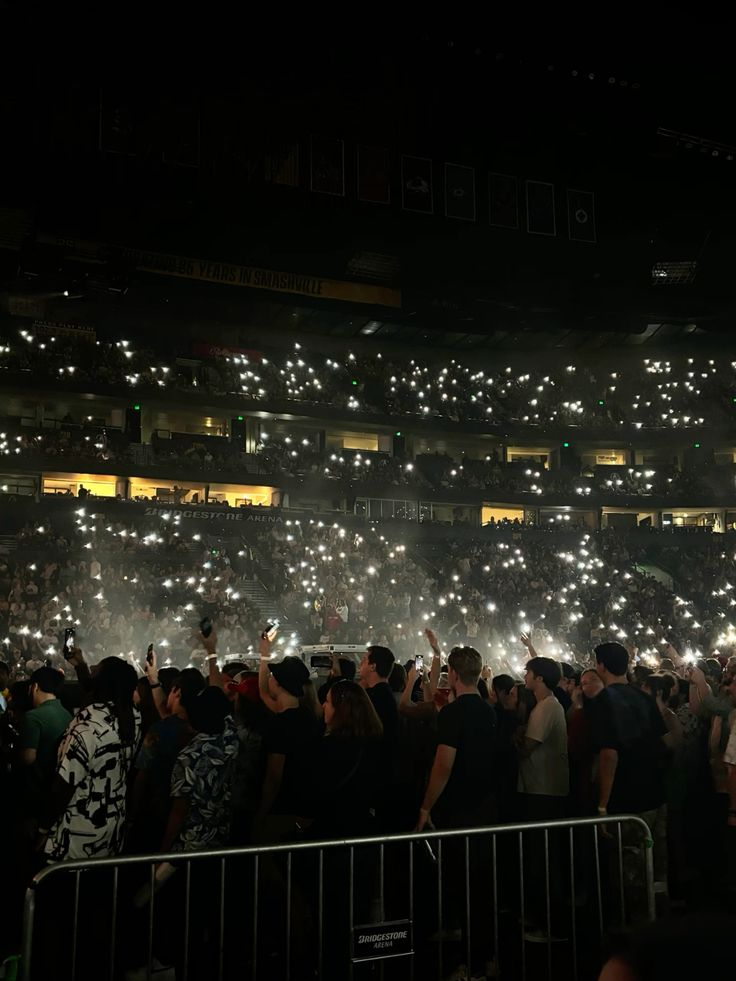

Projects
EnergyEye - Home Automation System
Date: January 2025
A real-time home automation system that monitors electricity consumption using an LDR and ESP32, transmitting data via MQTT to a web app for live tracking and appliance control.
Technologies: React, Tailwind CSS, MQTT, ESP32
View on GitHubCrowdtest - Safety & Space Management

Date: March 2025
A real-time web-based crowd monitoring and control system that visualizes live heatmaps of crowd density and suggests dynamic escape routes in case of emergencies.
Technologies: React.js, Node.js, MongoDB, ESP32-CAM
View on GitHubStudent Management System
Date: June 2025
A full stack web application with Spring Boot (JWT) backend and React frontend. Supports role-based login for Admin, Teacher, and Student. Features include attendance tracking, grade management, and secure authentication using JWT. Designed with a responsive UI and RESTful API integration.
Technologies: Spring Boot, React, Tailwind CSS
View on GitHub